Jun 30, 2025 · Exclusive photos of the house
The net: family first
José Adolfo Macías Villamar, Fito, walked out of La Regional prison in Guayaquil in January 2024. The official version puts the escape on January 7; Boscán maintains that the state noticed almost fifteen days late and that, according to police sources, he left at Christmas. From then on, Daniel Noboa's government searched for him without success: Interpol alerts, confidential tip lines and, in March 2025, a one-million-dollar reward and a criminal investigation for escape. Many assumed he was out of the country. Boscán suspected the opposite: Fito stayed in Manabí, the area he controlled like no one else, and from there, on at least three occasions, he offered the government a deal.
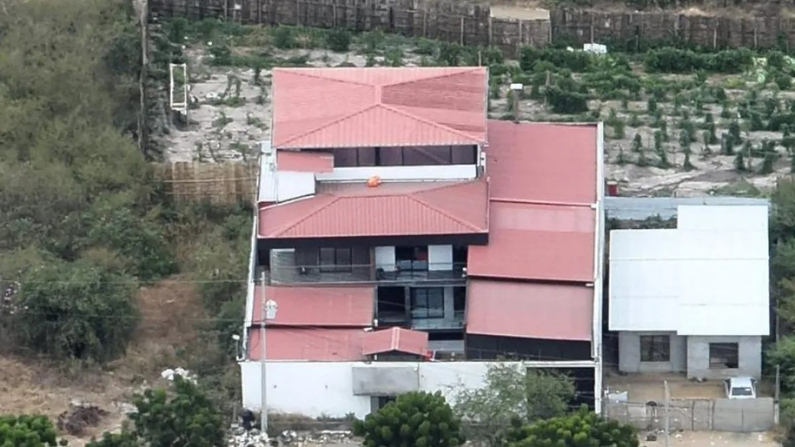
The first lead was the family. In January 2024 his wife, Inda Peñarrieta, and his children moved into a 300,000-dollar house on Lake San Roque in Córdoba, Argentina; she posted geotagged photos on Facebook, and Argentina's anti-narcotics force detained and expelled them. Once they were handed over to Ecuador, Diana Salazar's Attorney General's Office released them, Velásquez recalled. In late 2024, police arrested Verónica Briones, Fito's romantic partner and the mother of his youngest daughter, for money laundering while she was visiting a house under construction in the Monterrey area, between Manta and Montecristi, registered to Cristian Mendoza. No one knew at the time that there was a bunker underneath.
On June 2, 2025, police hit the first ring. In Manabí, Guayas and Pichincha they arrested Yandry Nicomedes Macías Villamar, Fito's brother; a brother-in-law; Briones's parents and a brother of hers, and seized 26 vehicles and 47 properties valued at 12 million dollars. Boscán reported that the investigation had sat frozen for more than a year in the financial crimes unit and that acting Attorney General Wilson Toainga dusted it off; a report by the UAFE, Ecuador's financial intelligence unit, from at least three years earlier already showed where the money moved: not through the wife, but through the romantic partner and the brother's circle. The next day he added what had appeared in intelligence reports since 2021: the family circle's companies, Iris, in cleaning and catering; Homabi, in heavy freight; and Queen Water, in ice and water, were state suppliers between 2021 and 2023. The Blanqueo Fito case describes 37 million dollars laundered, mostly over the past five years, houses and vehicles worth 13 million and accounts that moved 24 million.
26 and 47vehicles and properties seized from the family circle on June 2, 2025, worth 12 million dollars
$37Mlaundered by Fito's financial structure, according to the Blanqueo Fito case
With his family in custody, Fito reached out to the government. According to Boscán's intelligence sources, three times: first through Claudia Garzón, a former member of the peace commission created by Guillermo Lasso who was later implicated in the Metástasis case; then through a police major who had taken part in rescuing his daughter, kidnapped two years earlier; and finally through police officers in Manta, about two months before the capture. His demands shrank with each attempt: not to be extradited, to recover his assets, to keep his family out of it and to face no consequences; in the end, only that they respect his life. The government said no all three times. And there was a video call: in early May 2025, about twenty minutes long, between Fito and Interior Minister John Reimberg. The minister first denied it and admitted it on July 1.
They were trying to talk to me and I had sent word that I didn't want to serve time in Ecuador, I wanted to go to the United States. We did a video call, I saw him and he saw me.
Audio attributed to Fito, broadcast by Colombia's Noticias Uno and played on Café La Posta, June 30, 2025
The fourth channel was Colombia. On June 9, 2025, the Colombian Foreign Ministry received, through its ambassador in Quito, María Antonia Velasco, and Deputy Minister Rosa Yolanda Villavicencio, a handwritten letter attributed to Fito asking Colombia to act as guarantor of his surrender to avoid extradition to the United States. According to Noticias Uno's report, the negotiation began in early June, after his relatives were captured: Fito feared they would be sent to La Roca, controlled by Los Lobos, and offered to turn himself in in exchange for the return of some assets and the transfer of his family to La Regional, which Los Choneros control. On June 4 his lawyers met with an adviser appointed by Reimberg; they said they had information that the government's plan was to send him to El Salvador's mega-prison or to kill him, and that was why they wanted a guarantor. The published chats show the intermediary writing to the ambassador, 'Doctor, it's urgent. Letter from alias Fito asking for Colombia as guarantor of his surrender,' and her passing along the deputy foreign minister's number. The newspaper La Hora added that Fito didn't trust Reimberg and believed the best route was Toainga's Attorney General's Office, quickly, before the CPCCS appointed a new attorney general.
In carrying this out there will be no police or military presence, nor the use of weapons of any kind. At all times my life and the lives of those around me will be respected.
Letter attributed to Fito to Colombia's ambassador, read in the Noticias Uno report played on Café La Posta, June 30, 2025
The coverage
Nine parts
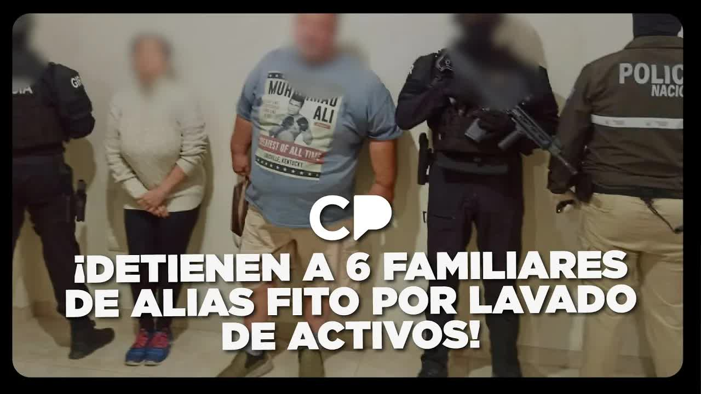
Part 01Jun 2, 2025 · 1:56:00
The first ring
Simultaneous raids in Manabí, Guayas and Pichincha against Fito's family: a brother, a brother-in-law, the in-laws; 26 vehicles and 47 properties worth 12 million dollars. An investigation that had been frozen for more than a year.
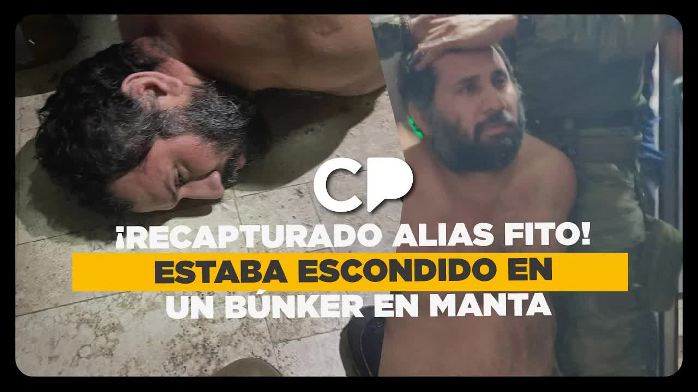
Part 02Jun 26, 2025 · 2:21:13
The recapture
Who Fito is, from Ecuavolley in the 15 de Septiembre neighborhood to the escape from La Roca and the bunker. The three deals he offered the government, the press conference by Reimberg and Loffredo and the list of what Fito could reveal in the United States.
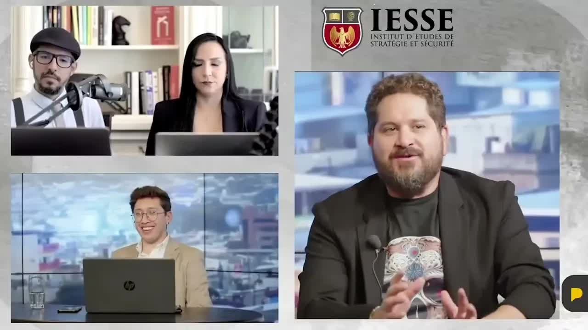
Part 03Jun 30, 2025 · 27:12
The house
Exclusive photos from the raids: the kitchen, the medicines, the dinosaur, the stroller, the armored doors and the pool that vanished from drone view. Why the police kept coming back again and again.
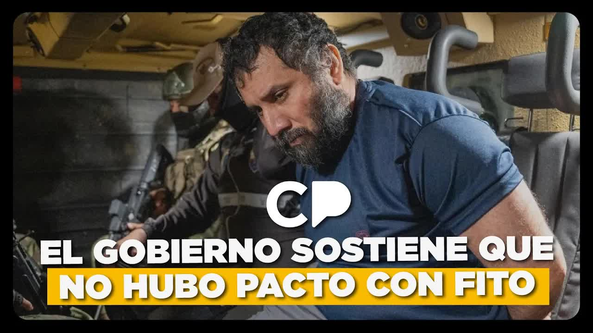
Part 04Jun 30, 2025 · 2:22:30
The negotiation
The facts and myths of the capture: the ghost employee at the Manta Transit Agency, the pharmacy, the four negotiation channels and the Noticias Uno report the minister called a lie. The mayor of Manta asks for a takeover of the transit company.
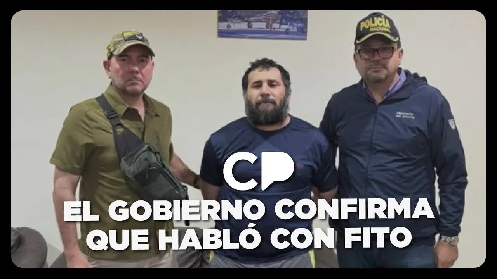
Part 05Jul 1, 2025 · 2:32:10
The video call
Reimberg admits the twenty-minute video call with Fito. The Noticias Uno journalist tells them the letter, the recordings and the chats came to him from a senior Ecuadorian official. Where Petro stayed in Manta and who wanted to meet with whom.
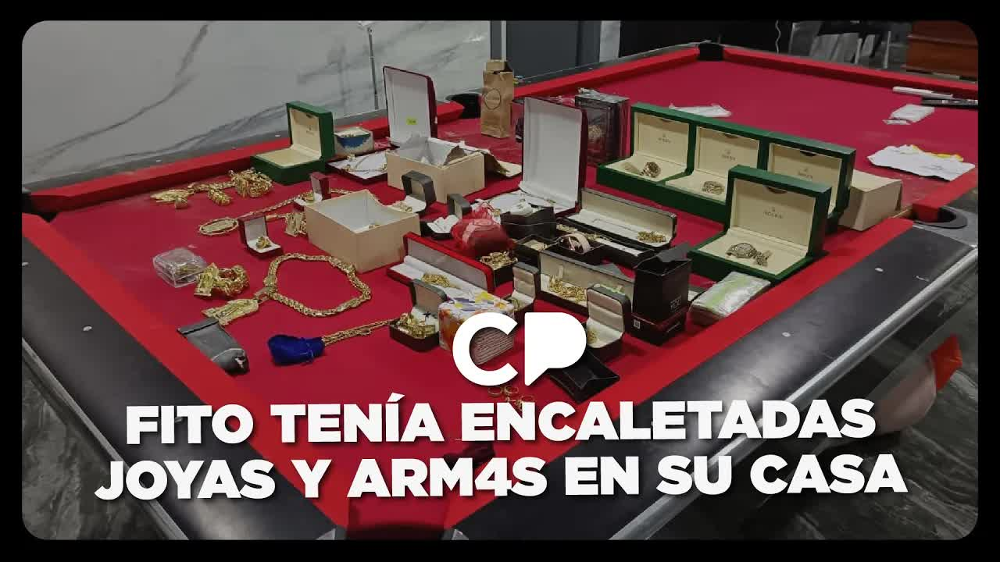
Part 06Jul 3, 2025 · 2:29:00
The stash
Backhoes in the Monterrey yard: weapons, ammunition, cash, jewelry and four Rolexes. Petro says he doesn't know Fito. Fernando Carrión on the political trophy and the culture of narco luxury.
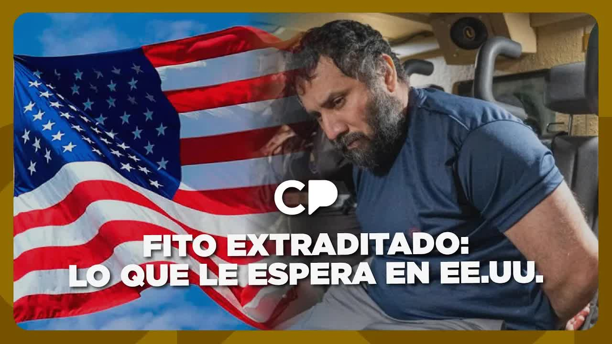
Part 07Jul 21, 2025 · 1:57:25
The plane
Fito is now in New York: the seven charges, the promise not to seek life imprisonment or the death penalty, and how cooperation is negotiated in the U.S. justice system, explained by Esteban Santos.
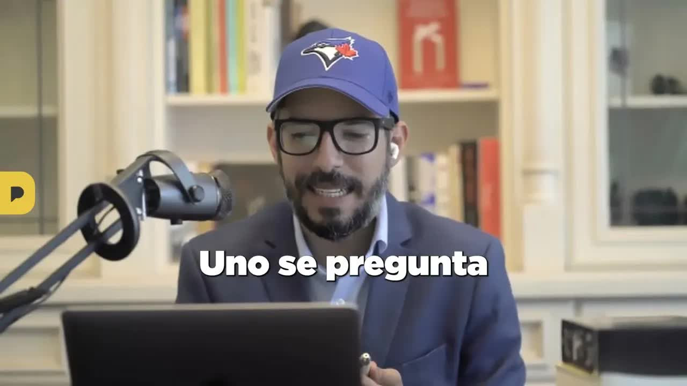
Part 08Oct 30, 2025 · 35:24
The hitman
Boscán's El Prólogo: alias La Muerte, Fito's main triggerman, calls from a prison in Mexico. He killed for the first time at age nine, had 72 crosses tattooed on his body and describes the call his victims received before the shot.
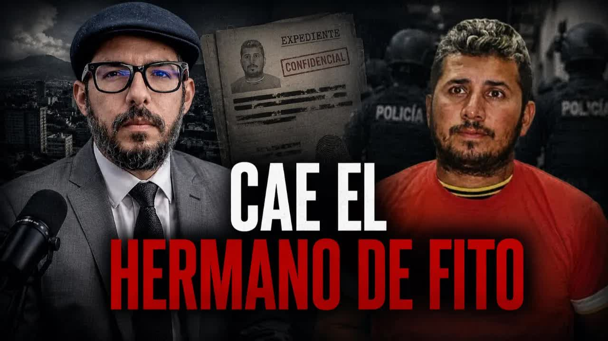
Part 09Jun 17, 2026 · 1:42:41
The brothers
Alias Javi, the last major active Chonero, is arrested in Colombia under a false identity. The list of the fallen chain of command and Reimberg's clash with Petro's government. A month later, his brother David turns up gunned down in Olón.
The Monterrey bunker
Police reached the house through an official who was paid without working. An intelligence report from late 2024 identified a network of ghost employees in the Manta municipal government: at the Transit Agency, Cristian Germán Mendoza Vélez and at least seven others drew salaries and didn't show up to work, all linked to Los Choneros. Transit is a key post for drug trafficking: it sees when police enter on the highways and coordinates the pickups of drugs and weapons. Mendoza had no criminal record or gang markings, and he was the owner of the Monterrey house. While tailing him, agents saw that he lived with three other men and that one of them, in the middle of a court case and required to check in every fifteen days outside Manabí, stopped on the way back at a pharmacy to buy baby formula and medicines. There were no children in the house. The medicines were for diabetes, glaucoma and hypertension: Fito's illnesses.
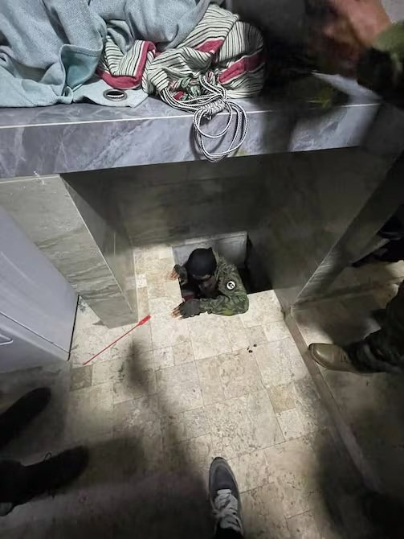
The house was on the list, along with 27 other properties in the area. Police had raided it when they arrested Briones, came back in February 2025 and again in March, and didn't find the hiding place: not even the densitometer that measures wall thickness revealed it. But they kept coming back because of what they saw: medicines at the back of a cupboard, a girl's toys, a plastic dinosaur identical to the one in photos of Fito's daughter with Briones, a red stroller on the balcony, armored doors on the bedrooms and a pool with a slide whose sliding roof made it vanish from drone footage, a strategy Vivanco recalled from one of El Chapo Guzmán's houses. Velásquez summed it up in 2026: the property was raided six times without results, because each time Fito went down into the bunker and waited, until the toys by the pool signaled that the daughter was there and, probably, the father.
On June 25, 2025, at five in the morning, the Armed Forces entered the house and sealed off fifteen blocks in every direction; about 200 soldiers, in the operation dubbed Gran Fénix 23. Military sources cited on the show said an intercepted call to his family was the starting point, the same crack that brought down Pablo Escobar in 1993. Ministers John Reimberg and Gian Carlo Loffredo flew to Manta; on a flyover, they noticed an irregular planting behind the house and called for heavy machinery. Velásquez said the operation lasted about twelve hours and that Fito only came out when they cut the electricity, he lost ventilation and he heard the excavators above his head: the police didn't find him, he panicked. He opened the hatch, and soldiers and police were waiting for him above. 'I'm not the way they make me out to be,' he told Loffredo. That same day Noboa, from his overseas tour, credited the capture to the Solidarity and Intelligence laws passed two weeks earlier. Fito arrived at the Simón Bolívar air base in Guayaquil at 21:15, paraded by the ministers before the cameras, and entered La Roca, the prison he had refused to go to in January 2024 because he believed he would be killed there.
When this happens, alias Fito panics, because if we kept going, the roof of his bunker was going to cave in. At that moment he opens the hatch, where military and police personnel were already waiting, and comes out of the hole he was in.
John Reimberg, interior minister, press conference at Carondelet broadcast by Café La Posta, June 26, 2025
Four guards fell with him: Carlos Cedeño, Cristian Mendoza, Freddy Zambrano and Eduardo Hurtado. Only one was listed as a known member of Los Choneros; Boscán read it as a minimal bubble to avoid leaks, with a one-million-dollar reward at stake. Intelligence sources who did not take part in the operation wondered, however, why the most wanted man in the country had a single gun with a single bullet and why his bodyguards, jiu-jitsu black belts, carried no weapons; they did not rule out that Fito had been lured with the promise of a meeting. Boscán also tempered the official heroics: the capture was the work of the ULCO, the police unit that had spent months tracking Fito and that traveled to the United States with the DEA and Homeland Security to prepare three cases, and it was credited to the Armed Forces because they needed a lifeline after letting alias Fede walk out of the Penitenciaría prison.
The house, which the show displayed in exclusive photos on June 30, was still under construction, with luxury finishes: a grill area, a kitchen, a wine decanter, a billiards room, a gym, the pool with a slide. The bunker, beneath a floor tile that slid aside, had air conditioning, a fan, a refrigerator and a bed; the soldiers compared it to those in Israel, Syria or Palestine. Six phones were collected. On July 2 the security team returned with backhoes to the yard, six or seven times larger than the house, and dug up a stash: firearms, ammunition, cash, jewelry and four Rolex watches worth between 20,000 and 35,000 dollars each. A collector once explained to Boscán what they're for: with three watches on your wrists, you can get through an airport carrying a million and a half dollars. Before the capture, police had entered Briones's cell and found documents and an electronic device detailing how drug money was mixed with money from legitimate businesses through a network of shell companies.
The hiding place
A cross-section of the house
Section AAHouse under construction · Monterrey, between Manta and MontecristiNot to scale
Yard level
01Heavy machinery
03Bedrooms
Bedroom
Bedroom
Armored door04Balcony
05Sliding roof
02Irregular planting
06Ground floor
- Grill area
- Kitchen
- Wine decanter
- Billiards room
- Gym
07Cupboard
08The floor tile
Pool with slide
11The stash
- Firearms
- Ammunition
- Cash
- Jewelry
- 4 Rolexes worth 20,000 to 35,000 dollars
09The way down
10The bunker
- Bed
- Air conditioning
- Fan
- Refrigerator
Swipe the cross-section to see all of it.
6 timesthe size of the house, the yard out front6raids without results12 hlength of the June 25 operation6phones collected
- 01
Where the backhoe went in
On a flyover on the morning of June 25, 2025, Ministers Reimberg and Loffredo noticed an irregular planting behind the house and called for heavy machinery. At hour 12 they cut the electricity and the excavators began digging above the bunker.
- 02
The planting that didn't add up
Behind the house, in a yard six or seven times larger than the building. It was what was seen from the air, and what led to the decision to use the excavators.
- 03
Armored doors on the bedrooms
Police saw them during the February and March 2025 raids and kept coming back because of them: a house under construction with armored bedroom doors.
- 04
The red stroller on the balcony
There were no children in the house. On the balcony there was a red stroller, and inside there were a girl's toys and a plastic dinosaur identical to the one in photos of Fito's daughter with Verónica Briones.
- 05
The pool that vanished
A pool with a slide under a sliding roof: when it was closed, the pool didn't show up in drone footage. Vivanco recalled the same strategy at one of El Chapo Guzmán's houses. The toys by the pool signaled that the daughter was there and, probably, the father.
- 06
Luxury finishes in a half-built house
What the show displayed in exclusive photos on June 30, 2025.
- 07
The medicines at the back of the cupboard
For diabetes, glaucoma and hypertension: Fito's illnesses. One of the men in the house bought them, along with baby formula, at a pharmacy on his way back from checking in every fifteen days outside Manabí.
- 08
A floor tile that moved
Beneath it, the hatch. Not even the densitometer that measures wall thickness revealed the hiding place: the property was raided six times without results.
- 09
This is where he went down
Every time police entered the house, Fito went down into the bunker and waited. On June 25, 2025, he climbed up through the hatch, and soldiers and police were waiting for him above.
- 10
The hole where the most wanted man lived
The soldiers who opened it compared it to the bunkers of Israel, Syria or Palestine. When they cut the power he lost ventilation and heard the excavators above his head. Six phones were collected.
- 11
What was buried in the yard
On July 2, 2025, the security team returned with backhoes and dug up the stash. A collector once explained to Boscán what the watches are for: with three on your wrists, you can get through an airport carrying a million and a half dollars.
Reconstruction based on what appears in the record: the three earlier raids, the exclusive photos of June 30, 2025, and what the security team dug up on July 2. There are no official plans of the hiding place.
12 hourslength of the June 25 operation according to Velásquez; the official version says more than ten
27properties linked to Fito's circle were on the police list, in addition to the Monterrey house
Hour by hour
The operation log
Incident logOperation Gran Fénix 23Closing inNegotiationBunkerExtradition
TimeUnitEntry
- Late 2024Police intelligence
A report identifies a network of ghost employees at the Manta Transit Agency, among them Cristian Mendoza, owner of a house under construction in Monterrey. Verónica Briones is arrested for money laundering while visiting that house.
- Feb to Mar 2025National Police
Two more raids on the house, with a densitometer. The bunker doesn't turn up; medicines for diabetes and glaucoma, a girl's toys and a red stroller do.
- Early May 202520 minInterior Ministry
Video call of about twenty minutes between Fito and Minister John Reimberg. Fito asks for conditions to surrender; the government refuses. The minister will deny it and then admit it on July 1.
- Jun 2, 2025Police · Attorney General's Office
The first ring falls in Manabí, Guayas and Pichincha: a brother, a brother-in-law and the in-laws; 26 vehicles and 47 properties worth 12 million dollars.
- Jun 4, 2025Fito's lawyers · Reimberg's adviser
Meeting with an adviser appointed by the minister. The lawyers ask for a guarantor: they fear the outcome will be El Salvador or death.
- Jun 9, 2025Colombian Foreign Ministry
A handwritten letter attributed to Fito reaches Ambassador María Antonia Velasco: he asks Colombia to act as guarantor of his surrender to avoid extradition.
- Jun 25, 202505:00Armed Forces · Gran Fénix 23
About 200 soldiers enter the Monterrey house and seal off fifteen blocks in every direction. Starting point: an intercepted call to the family.
- Jun 25, 2025MorningMinisters Reimberg and Loffredo
They fly to Manta. On a flyover they notice an irregular planting behind the house and call for heavy machinery.
- Jun 25, 2025Hour 12Security team
They cut the electricity; the excavators dig above the bunker. Without ventilation, Fito opens the hatch. Soldiers and police are waiting for him above. Four guards arrested.
- Jun 25, 202521:15Simón Bolívar air base · Guayaquil
Fito arrives, paraded by the ministers before the cameras, and enters La Roca, the prison he had refused to go to in January 2024.
- Jun 26, 2025Carondelet
Press conference by Reimberg and Loffredo: the transit ghost employee, the pharmacy, the bunker. In New York, a criminal defense lawyer files an appearance on Fito's behalf.
- Jul 1, 2025Interior Ministry
Reimberg admits the May video call. The official versions of the capture changed five times in one week.
- Jul 2, 2025Security team · backhoes
The stash in the yard: weapons, ammunition, cash, jewelry and four Rolexes worth between 20,000 and 35,000 dollars each.
- Jul 20, 202514:00U.S. Department of Justice
A plane leaves Guayaquil with Fito and lands in New York around eight at night. Noboa: "Goodbye forever, Fito."
- Jul 21, 2025Federal court in Brooklyn
Through an interpreter, he pleads not guilty to seven charges. No bail: two escapes and ties to the Sinaloa cartel.
End of logExtradited on July 20, 2025 · not guilty plea in Brooklyn
Deal or trophy
The recapture was the government's biggest security win and, according to Boscán, saved the jobs of Reimberg and Loffredo, who had been on thin ice weeks earlier. It didn't stay intact for long. The following weekend, Colombia's Noticias Uno reported that Fito himself had given the minister the address for a meeting on June 25 and that, instead of the minister, the counterterrorism police showed up. Reimberg replied on X: 'Colombia's Canal 1 is lying,' Fito did not surrender, there was no deal and Colombia was not involved, the operation was one hundred percent Ecuadorian. Boscán asked for precision: is it lying about the letter? No, the letter exists. About the ambassador receiving it? No. About there being a delegate and a video call? The minister hadn't addressed that. On July 1, on Jimmy Jairala's show, Reimberg admitted the twenty-minute video call in early May: Fito asked for things, everything was refused, and after that call he himself led the operations to strip him of his assets and companies and arrest his family. In one week the official versions changed five times: the laws, a call to the 131 tip line, the little girl who said where her dad was, the transit agent, the medicines. Police sources, Velásquez said, were annoyed because the minister talked about the girl when it had been agreed not to.
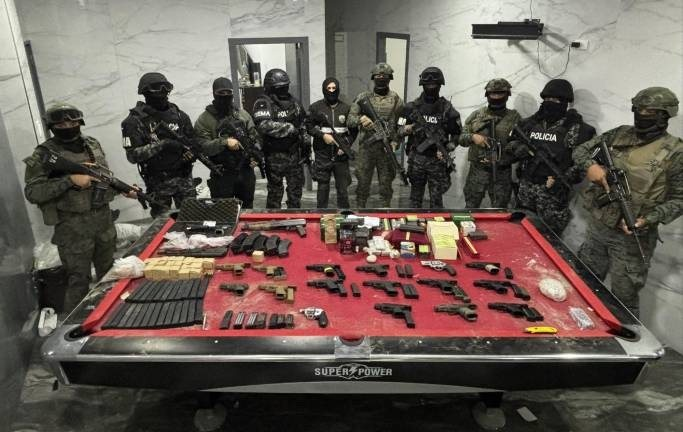
EvidenceNegotiating is one thing, receiving a negotiation proposal is another. Making a deal with Fito would have meant reaching an agreement, staging the capture. That is very serious. It's another thing that Fito wanted to negotiate. This ends the day they extradite him.
Andersson Boscán, June 30, 2025
The Colombian Foreign Ministry acknowledged receiving the communication on June 9, said its authenticity had not been verified and that it does not act as guarantor for drug traffickers; the ambassador denied receiving any letter. Gustavo Petro wrote that he doesn't know Fito. The Colombian president had been in Manta after Noboa's inauguration on May 24, and a column in El Tiempo placed him at a mansion belonging to a relative of Fito. Velásquez and the team debunked it with facts: Petro stayed in Santa Marianita, in a rented beach house owned by a Quito businessman with no ties to politics, surrounded by Ecuadorian police and soldiers who were actually running surveillance on him for fear of contact with Fito's people. There were, according to Velásquez's reporting, delegates and lawyers for Fito who requested a meeting with Petro, including a trip to Colombia; the meeting never took place. Boscán noted that Fito approached the Colombian embassy and not the U.S. one for a reason: he knew who might open the door to him. And the Noticias Uno journalist told them, in two calls, that the physical letter, the recordings and the chats came to him from a senior official in the Ecuadorian government.
That minister doesn't inspire any trust in me. He's not a prepared person to reach coherent terms, and because I already had a talk with him.
Audio attributed to Fito about John Reimberg, broadcast by Noticias Uno and played on Café La Posta, July 2, 2025
The case file had another consequence. On June 30, Manta's mayor, Marciana Valdivieso, asked the government to take over the Public Mobility Company: one of its employees, on the payroll for more than thirteen years, was part of Fito's ring, and the institution had accumulated assaults, threats, bombs, deaths and systematic absences. Boscán recounted what the late Mayor Intriago had told him: one of the first calls a mayor of Manta gets, on election day itself, is from Fito, to let him know who's in charge. And he asked what the state would do with the other transit employees fully identified by the police command, the Interior Ministry and intelligence. In Esmeraldas the Tiguerones do it, and in El Oro other gangs: transit agencies are the front line that warns when the police are coming, and that's why so many agents are murdered.
Brooklyn: the first extradited
Fito had a lawyer in New York as of June 26, the day after the capture: a criminal defense attorney known for representing Colombian kingpins, among them alias Chupeta, of the Norte del Valle cartel. The U.S. Attorney's Office for the Eastern District of New York had charged him since April 2024 with seven counts: conspiracy to distribute cocaine internationally, distribution of cocaine in two shipments of about 1,100 and 800 kilos, use of firearms in drug trafficking, smuggling weapons from the United States and conspiracy to purchase weapons fraudulently. Boscán had said on June 26 that the only way to know whether there had been a deal was called extradition. Reimberg promised it would happen before December. It took 25 days: Fito accepted extradition before the president of the National Court of Justice, José Suing, in a matter of seconds, according to international affairs analyst Esteban Santos, and the United States committed in writing not to impose life imprisonment or the death penalty. On Sunday, July 20, 2025, a Justice Department plane left Guayaquil at two in the afternoon and landed in New York around eight at night, with no official announcement until Noboa's tweet: 'Goodbye forever, Fito.' On July 21, before a federal court in Brooklyn and through an interpreter, he pleaded not guilty; the prosecutor asked that he be denied bail because of how dangerous he was, his two escapes and his ties to the Sinaloa cartel.
16,647days old was Fito on June 27, 2025; he spent 5,772 of them in prison, one in every three
What follows is what Boscán listed on the day of the recapture: what he will reveal and whom he will expose. Who helped him reach the highest office of the Attorney General's Office and offered protection to a family that was never prosecuted; the active and retired police generals who paid him homage for a monthly payment, some of it delivered by small plane in Samborondón, and who ran operations against Los Lobos to leave the ports open for him; the ministers with whom he did make deals for privileges in the prisons in exchange for cooling things down on the streets; the officials who asked him for help recapturing escapees; the campaigns for mayor, provincial prefect and national office that he financed; who, in Lasso's government, opened up public money so his companies could become state suppliers; who helped him escape in 2024, in an escape that former Attorney General Salazar refused to investigate; the soldiers who guard the drugs coming in across the northern border; the facilities the main banks provided to move 30 million dollars through his accounts and his family's. And, above all, that he is not Ecuador's top kingpin: there are bigger, more violent and quieter ones. In the United States, Santos explained, cooperation is negotiated openly and in exchange for evidence: routes, operators, banks, officials. Velásquez maintained that there had been some kind of conversation or agreement, with several embassies aware of it, and that for now the extradition was a reward: in a federal prison, Fito is far less likely to die than in La Roca.
There is only one way to understand whether or not there was a deal, and that's called extradition. If Fito ends up on a plane bound for the United States, that's where the story ends.
Andersson Boscán, June 26 and 30, 2025
What remained afterward

In October 2025, from Canada, Boscán published five installments on El Prólogo about alias La Muerte, Fito's main triggerman, who called him on WhatsApp from a prison in Mexico while Boscán was cooking pasta on a Sunday. He killed for the first time at age nine, two boys who stole his bread at school, at 17th Street and Gómez Rendón in southwest Guayaquil, for twenty dollars he never collected; he stopped tattooing his victims on his body after cross number 72. He was recruited by alias Fede's brother-in-law in Bastión Popular, introduced himself to Fito, then Rasquiña's number two, by video call, and was sent to a hitman school in Sucumbíos run by alias Lalo, where active and retired soldiers spent a month and a half training young men convinced they were guerrillas; graduation required biting into a corpse's heart. He described the trade: 17 or 18 days of surveillance, the address pulled from the electricity or water bill, which is why the narcos place people at CNEL, the water companies and the transit agencies; the videos of the children getting on the school bus; the advance call Fito required so the victim would know who and why. He walked into a health center in Santo Domingo dressed as a police officer with six men to finish off a wounded man under guard, and into La Regional prison dressed as a guard to protect Fito. He charged up to 50,000 dollars for a job, for someone famous. He left Manta with what he thought was a two-ton shipment, and the Mexican Navy boarded him before Chiapas: it was 100 kilos, a false flag to get rid of him. He called, he said, so people would be told that none of it is worth it.
I've got your wife located and I've got your son located. The moment I'm saying that, I'm so close to you that you don't turn around. It's a protocol you have to follow, as the client requests.
Alias La Muerte, Fito's triggerman, re-creating the call made before a killing, El Prólogo de Boscán, October 30, 2025
The structure kept falling. In May 2026, Velásquez placed Fito in the series of kingpins who fell for love: Escobar because of the birthday call to his son, El Chapo because of an actress, Fito because of the toys by the pool. On June 16, 2026, Ronald Javier Macías Villamar, alias Javi, Fito's younger brother, was arrested in Colombia with a false Colombian identity and documents and an Interpol red notice; he had been sentenced to twelve years for homicide and released in 2018 when the highest court voided his appeals, and to the anti-narcotics police he was the last major active Chonero. Ecuador's search team located him and Colombian authorities arrested him; Reimberg accused the Colombian government on Caracol of refusing to hand him over until the red notice arrived. Boscán reconstructed the list: Celso and Fede in custody awaiting extradition, Topo with extradition ordered, Yandry detained, a brother sentenced in 2026 to ten years for money laundering; of the generation that inherited Rasquiña's gang, only a son of Fito remained free. Less than a month later, in the early hours of July 12, 2026, David Macías Villamar, a brother whom the gang never let into the leadership and who was arming people in Puerto López, was gunned down in the Altos de Olón housing development in Manglaralto: 40 spent casings, 30 of them 9 millimeter and 10 of them 5.56, according to the police report. In 2021 the Attorney General's Office had shelved a preliminary investigation into him. Los Choneros, 30,000 or 40,000 people, kept operating with their leadership in pieces, seven or eight losses in ten months, while Los Lobos, by then the country's top criminal structure, and a kingpin the police call Loco Ovidio fought over the areas that had been theirs.
72crosses tattooed by alias La Muerte before he stopped counting his victims
40spent casings next to David Macías Villamar's body in Olón, July 12, 2026
Los Choneros after Fito
The chain of command
Los Choneros
José Adolfo Macías Villamar, Fito
Inherited the gang after JL's death in December 2020, together with Junior Roldán. In prison since 2011, escaped from La Roca in 2013 and from La Regional in 2024. Recaptured on June 25, 2025, and extradited on July 20, 2025; pleaded not guilty in Brooklyn.
- Los Choneros
Ronald Javier Macías Villamar, Javi
Younger brother, longtime criminal and a man of Fito's absolute trust. Sentenced to twelve years for homicide and released in 2018 when the highest court voided his appeals. Captured in Colombia on June 16, 2026, with false Colombian documents.
- Los Choneros
Alias Celso
Identified in June 2025 as a contender for the leadership, with control over the port of El Oro and mines in the south of the country. By June 2026, in custody awaiting extradition.
- Las Águilas
Alias Fede
Number two of Los Choneros. Walked out of the Penitenciaría del Litoral prison in June 2025, days before Fito's recapture; later captured, facing possible extradition.
- Family circle
Yandry Nicomedes Macías Villamar
Brother. Arrested in Quito on June 2, 2025, in the money laundering operation against Fito's first ring.
- Family circle
David Macías Villamar
Brother whom the gang never let into the leadership. Armed people in Puerto López. Murdered in Olón in the early hours of July 12, 2026, as he tried to claim the leadership.
- Los Choneros
Dani Villa, Toñito and Carlos Cornejo
Internal contenders the police mapped after the capture: Dani Villa survived an attack together with Toñito, Fito's nephew; Cornejo's identity was not confirmed.
- Family
Adolfo Macías Junior, Adolfito
Fito's son. In 2025 police considered him an unlikely successor; in June 2026 Boscán identified him as the only one in that line of command still free.
2024 → 2026
From the escape to Brooklyn
- Jan 2024Escape from La Regional; internal armed conflict
- Jun 2, 2025The first ring falls: 26 cars, 47 properties
- Jun 25, 2025Recaptured in the Monterrey bunker
- Jul 1, 2025Reimberg admits the video call
- Jul 20, 2025Extradited; pleads not guilty in Brooklyn
- Government-Fito dealNo proof; the extradition happened
- Jun 16, 2026Alias Javi arrested in Colombia
- Jul 12, 2026David Macías Villamar murdered in Olón
Updated September 5, 2026
What's missing
Unanswered questions
- How long Fito lived in the Monterrey bunker and who kept him supplied
- What Fito and John Reimberg said to each other during the twenty-minute video call in May 2025
- Which senior Ecuadorian official gave Noticias Uno the letter, the recordings and the chats
- What Fito told prosecutors in Brooklyn and whom he named
Timeline
Step by step
- 2011Imprisoned for drug trafficking
Fito, 32, enters La Roca with the leaders of Los Choneros.
- 2013The escape from La Roca
Walks out the front door with 17 others, including JL; recaptured five months later.
- Dec 28, 2020JL is killed
Fito inherits Los Choneros together with Junior Roldán.
- Jan 2024Escape from La Regional
Officially on January 7; the state took days to notice. His family is detained in Córdoba, Argentina.
- Apr 2024Charges in Brooklyn
Seven federal counts for cocaine and weapons; the arrest warrant is made public.
- Late 2024Briones arrested in Monterrey
Fito's partner is arrested for money laundering while visiting Cristian Mendoza's house. Intelligence report on ghost employees in Manta.
- Feb-Mar 2025Raids without finding the bunker
Police return to the house with a densitometer and don't find the hiding place; they do find medicines and toys.
- Mar 2025A one-million-dollar reward
The Interior Ministry raises the reward and opens a criminal investigation for escape.
- Early May 2025The video call
About twenty minutes between Fito and Minister Reimberg. Fito asks for conditions; the government refuses.
- May 24, 2025Petro in Manta
After Noboa's inauguration, the Colombian president stays in Santa Marianita under Ecuadorian surveillance.
- Jun 2, 2025The first ring falls
A brother, a brother-in-law and Fito's in-laws arrested; 26 cars and 47 properties worth 12 million.
- Jun 9, 2025The letter to Colombia
The Colombian Foreign Ministry receives the communication attributed to Fito asking for a guarantor.
- Jun 25, 2025Gran Fénix 23
From 5:00, about 200 soldiers; excavators over the irregular planting; Fito climbs out through the hatch. To La Roca at 21:15.
- Jun 26, 2025Press conference
Reimberg and Loffredo describe the transit ghost employee and the bunker. A New York lawyer files an appearance in Brooklyn.
- Jun 28-30, 2025Noticias Uno and the photos
The Colombian channel reports the negotiation; Reimberg calls it a lie. La Posta shows the house in an exclusive.
- Jul 1, 2025Reimberg admits the call
He confirms the May video call. La Hora: Fito wanted to negotiate with the Attorney General's Office.
- Jul 2, 2025The stash
Weapons, ammunition, cash, jewelry and four Rolexes under the yard. Petro says he doesn't know Fito.
- Jul 20, 2025Extradition
A U.S. Department of Justice plane leaves Guayaquil at 14:00; it arrives in New York that night.
- Jul 21, 2025Not guilty
First hearing in Brooklyn; no bail.
- Oct 30-31, 2025Fito's hitman
Five installments of El Prólogo on alias La Muerte, imprisoned in Mexico.
- Jun 16, 2026Alias Javi arrested
Fito's brother, detained in Colombia with false documents.
- Jul 12, 2026David is killed
Fito's brother is gunned down in Altos de Olón, Manglaralto.
The names
Who's who

Extradited on July 20, 2025; pleaded not guilty in Brooklyn
José Adolfo Macías Villamar, Fito
Leader of Los Choneros. Escaped in 2013 and 2024; recaptured on June 25, 2025.
JR
Denied a deal; admitted the May video call
John Reimberg
Interior minister. Led the security team and the operations against Fito's assets and family.
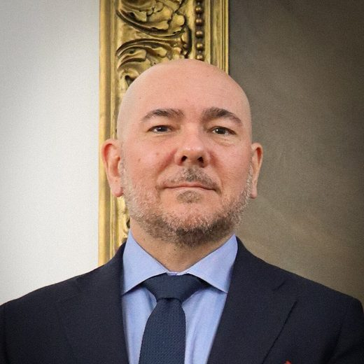
On thin ice weeks earlier, according to Boscán
Gian Carlo Loffredo
Defense minister. Met Fito as he came out of the bunker.
CG
Arrested with Fito
Cristian Germán Mendoza Vélez
Owner of the Monterrey house; employee of the Manta Transit Agency who was paid without working.
CC
Arrested on June 25, 2025
Carlos Cedeño, Freddy Zambrano and Eduardo Hurtado
Fito's guards at the house, along with Mendoza. Only one was listed as a known Chonero.
VB
In custody for money laundering since late 2024
Verónica Briones
Fito's romantic partner and the mother of his youngest daughter.
CG
Implicated in the Metástasis case
Claudia Garzón
Fito's first emissary to the government; former member of Lasso's peace commission.
MA
Denied receiving the letter
María Antonia Velasco
Colombia's ambassador to Ecuador, addressee of Fito's letter.
GP
Said he doesn't know Fito
Gustavo Petro
President of Colombia. Was in Manta in May 2025; Fito's delegates sought a meeting with him.
WT
Fito wanted to negotiate with him, according to La Hora
Wilson Toainga
Acting attorney general. Dusted off the case against Fito's financial circle.
MV
Asked for a takeover of the Public Mobility Company
Marciana Valdivieso
Mayor of Manta.
RJ
Captured in Colombia on June 16, 2026
Ronald Javier Macías Villamar, Javi
Fito's brother, heir to the structure.
DM
Murdered in Olón on July 12, 2026
David Macías Villamar
Fito's brother; tried to claim the leadership.
AL
In prison in Mexico
Alias La Muerte
Fito's main triggerman; 72 victims tattooed on his body.
Photos via Wikimedia Commons. José Adolfo Macías Villamar: Penitenciaría (CC BY-SA 4.0); Gian Carlo Loffredo: Michelleav89 (CC0).
The other side
Responses and reactions
- John Reimberg, interior minister
On X: 'Colombia's Canal 1 is lying.' Fito did not surrender, there was no deal and no involvement by Colombia; it was a one hundred percent Ecuadorian operation based on intelligence. On July 1 he admitted a video call of about twenty minutes in early May, in which Fito asked for conditions to surrender; all were refused, and afterward he led the operations against Fito's assets, companies and family. The reward was never 'dead or alive.'
- Colombian Foreign Ministry
On June 9, through the ambassador and the deputy minister, it received a communication attributed to Fito asking for Colombia's mediation as guarantor of a surrender to avoid extradition. Its authenticity was not verified and no official request arrived through diplomatic channels. The Foreign Ministry does not act as guarantor for drug traffickers.
- María Antonia Velasco, Colombia's ambassador
'No letter has reached me, no procedure with that letter, none at all.'
- Gustavo Petro, president of Colombia
On X: he doesn't know Fito; the story is 'another leivada.' Like any president abroad, he was protected day and night by the security forces of the sister country.
- Daniel Noboa, president of Ecuador
Credited the capture to the Solidarity and Intelligence laws, thanked the police and the military and announced the extradition request. On July 20: 'Goodbye forever, Fito.'
- Fito, in recordings broadcast by Noticias Uno and La Hora
He spoke with the minister by video call; he had sent word that he didn't want to serve time in Ecuador but to go to the United States. Reimberg doesn't inspire trust in him. He doesn't know any cartel and has never sold drugs in his life.
- Marciana Valdivieso, mayor of Manta
Asked the government to take over the Public Mobility Company: her employee's case is not isolated but a symptom of an institution infiltrated by networks foreign to public service, with assaults, threats, bombs, deaths and systematic absences.
The pieces
The other videos
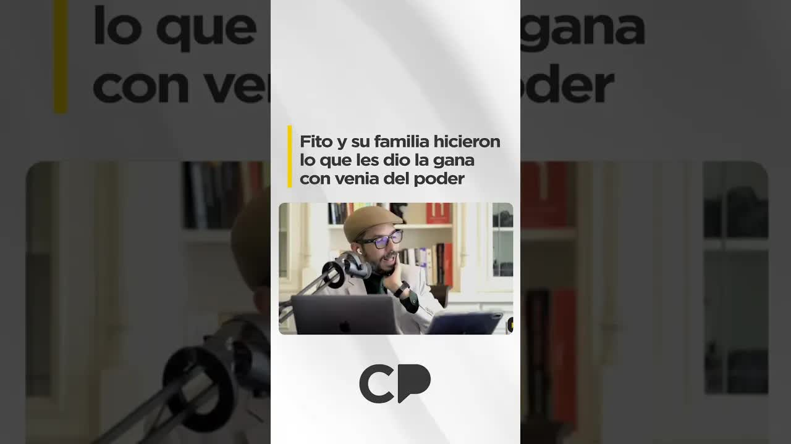
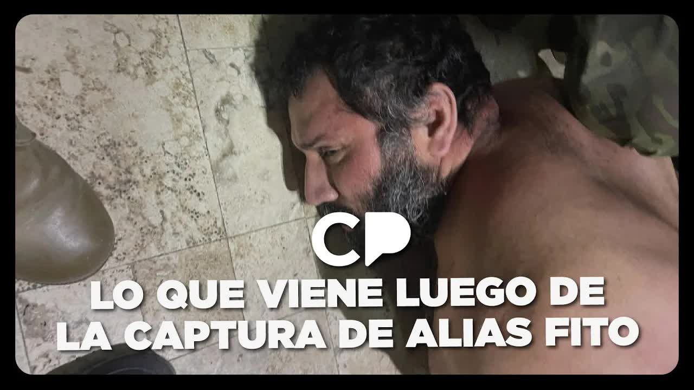
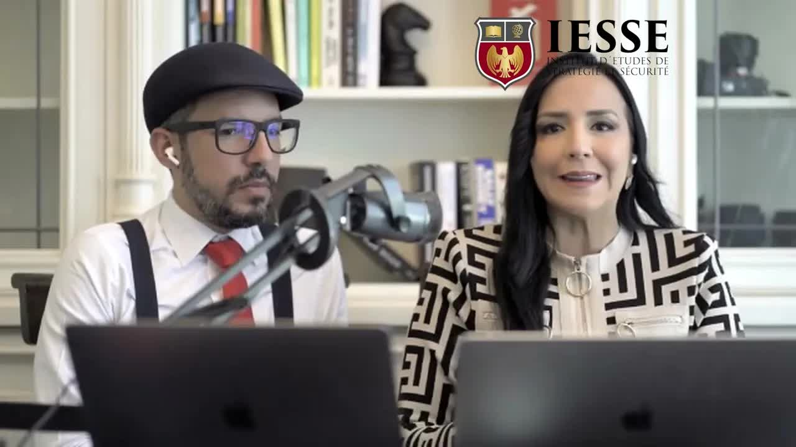
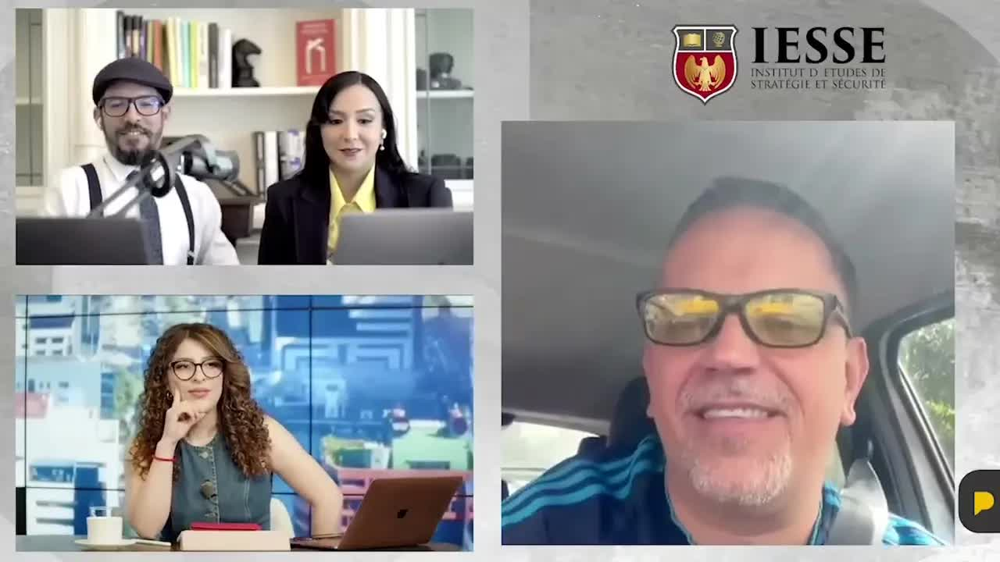
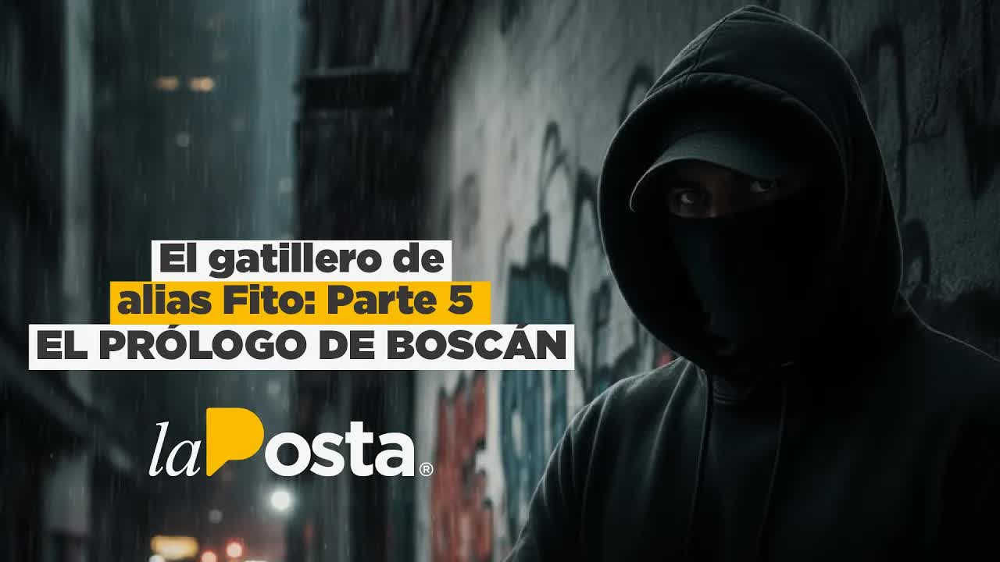
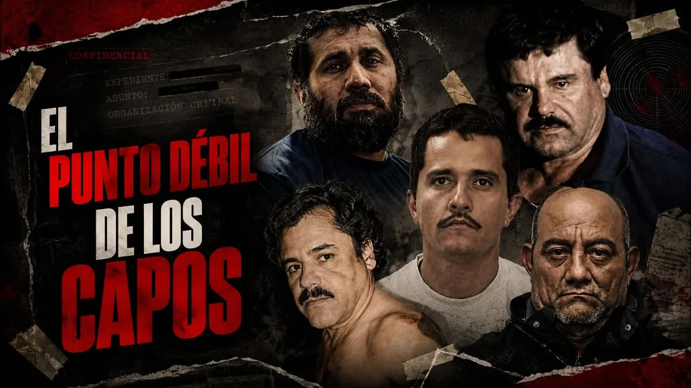
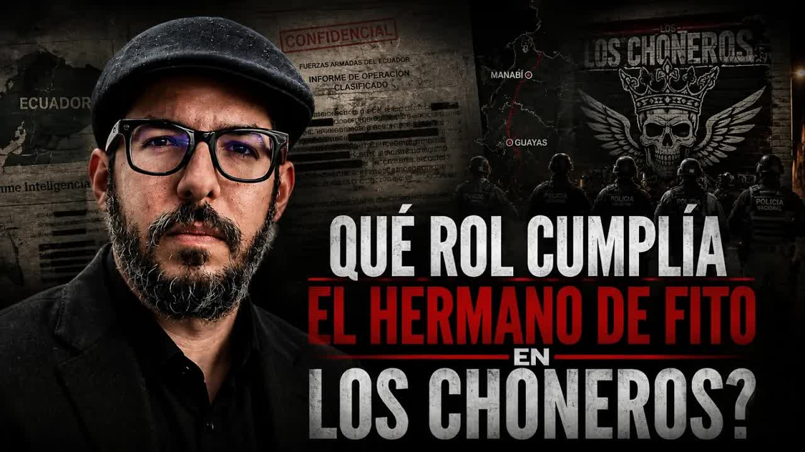
Investigation material
What didn't make it into the story
What was said on air
The transcripts
Six of Alias Fito's Relatives Arrested | The Law That Divides the Assembly
06/02/2025 · 17,342 wordsit's that we have so present the swearing, the silences, the beer, the barbecue, his gaze fixed on the TV, ours fixed on his gaze fixed on the TV. And sometimes, like on Saturday in Munich, Germany, the space between death and life gets really crazy. The thing is that Luis Enrique was there, the Paris Saint-Germain coach, the guy with the statue face who seems not to suff…
Read the full transcriptFito and His Family Did Whatever They Pleased With the Blessing of the Powerful
06/03/2025 · 460 wordsEcuadorian state, especially between 2021 and 2023. go figure why in those times and who was running the government. It was already known then that, for example, uh Iris limpieza uh which was in catering and cleaning, or that the company Homabi, which was in heavy freight, who knows what the trucks might have carried? Or that the company Queen Water, which distributed ice and water and gave…
Read the full transcriptAlias Fito: How He Was Recaptured in Ecuador | What Will Happen to Los Choneros?
06/26/2025 · 20,235 wordsolder, uh, Alias Esparta, could be, or España. And and this gang was called Los Choneros. It was a gang that was dedicated to to stealing cars, not even cars in general, but uh car parts. he was barely 19 when he was jailed for the first time in 2000, precisely for those habits of going around stealing vehicle accessories. He served 3 years and then back on the street for good behavior, because that's Ecuador. By th…
Read the full transcriptWhat Comes After Fito's Capture | Children With Adult Sentences
06/27/2025 · 20,708 wordsWhere does alias Fito's fortune come from? From the narco trade. Oh, no, genius. Let's give him a prize. From where? I'm not going to take you today uh through the process of importing and exporting cocaine, which I think deserves a chapter of its own. But allow me to focus uh this commentary on Alefito and how he amassed his fortune, which is estimated at several tens of millions of dollars according to police records and police sources…
Read the full transcriptThis Is the Luxury House Where Fito Fell
06/30/2025 · 4,299 wordsLet's see, we have information about the house where they caught Adolfo Macías, alias Fito. Muni is working right now on one of her very long, very well-documented threads, uh, but I don't like to read, so I'd rather have it presented to me here on the show. All right? Next, my colleague. Next, my colleague. Let's see, these are images that belong to the different operations that the nation's police…
Read the full transcriptDid Fito Negotiate His Surrender? The Government Responds | What Will His Extradition Look Like?
06/30/2025 · 21,792 words[ __ ] wanted to negotiate with the Ecuadorian state. Yes, he tried. The negotiation finally took place. he was betrayed by the security forces authorities after winning his trust. This was a DEA operation. It is the result of intelligence work stemming from the recently passed laws. It was a series of events that finally led to his capture. Let me tell you a little…
Read the full transcriptFito TALKED With the Government | Jorge Glas Sentenced Again
07/01/2025 · 23,640 wordsPichincha provincial government. Safe spaces for our future champions. Pichincha sports. Pichincha provincial government. On behalf of Daniel Novoa, María José Pinto, Vinia Balbonesi, Inés Manzano, Anabela. Thanks Paola Cabezas. So you, my friend from La Floresta, I'm going to explain to you what 25,000 barrels of crude means. And well, Bidvin Badabang, Machi doesn't match with this agreement and RC has gotten…
Read the full transcriptFito Turned to Colombia to Negotiate His Surrender
07/02/2025 · 4,066 wordsOkay. Let's see, uh, topic of the day until my bench joins, it's going to be the same topic anyway. Uh, it's the revelation Noticias Uno has made of Fito's chats with the Colombian government. Okay. A complication for uh Petro, who on top of that has the issue really heated in Colombia, really heated. They're super worried. Yes. And I think more information is going to keep coming out, right? So yes, it's going to come out drop by drop. The government has…
Read the full transcriptJewels and Weapons Stashed at FITO's House! | Petro Says He Doesn't Know FITO
07/03/2025 · 23,030 wordsworld-famous uh and that youtubers love to visit, where criminals are treated as if they weren't human beings. the lights are kept on, they're given crappy food, they're not allowed visits of any kind, they're on display there all day, there are human rights violations, they get beaten, and today the only ones who die in El Salvador, I read a report on this yesterday, are precisely…
Read the full transcriptFito Is Now in the U.S. | What Awaits Him Before Gringo Justice?
07/21/2025 · 18,240 wordsto stay down below, as they had planned, he went up. He went up with a bunch of people to wing 3 and wing four of the cellblock and on the upper floor they dug in. They found bullets and held out for almost an hour while down below they set the entire cellblock on fire after breaking through the walls. The police, watching comfortably from outside, where the officers in charge had made a deal with alias Junior to receive mone…
Read the full transcriptFito to the U.S.: Reward or Punishment?
07/22/2025 · 2,484 wordsI want to start putting forward for this discussion panel, using my role here as topic-setter, uh the Fito topic, okay? He's going to a prison that the gringos describe to us as violent, uh prosecutors whom the gringo press describes as experienced in uh putting big kingpins behind bars, Carlos Quintero, Chapo Guzmán, among others. And a lawyer uh very specialized in getting good privileged deals for drug traffick…
Read the full transcriptAlias Fito's Hitman | EL PRÓLOGO DE BOSCÁN
10/30/2025 · 5,443 wordsA hitman called me. I don't know why I never have normal sentences to start with. A hitman called me, not just any hitman. He was the main triggerman of alias Fito, the best known, the best known of Ecuador's drug traffickers, now imprisoned in the United States. This triggerman was called La Muerte. he called me while I was cooking a pasta amatriciana on an ordinary Sunday, still summer, because I had the stupid ide…
Read the full transcriptAlias Fito's Triggerman: Part 4 | EL PRÓLOGO DE BOSCÁN
10/30/2025 · 1,673 wordsromanticize crime, and since this is the society of the journalism of fear, where everyone pays more attention to the comments than to what they write, we censor ourselves before they censor us and we never tell it. But the evident truth, if you will, is that they fall in love too. That includes alias La Muerte. And if you follow this diary, you know well that this is the fourth of five installments about his life. The …
Read the full transcriptAlias Fito's Triggerman: Part 5 | EL PRÓLOGO DE BOSCÁN
10/31/2025 · 1,660 wordsCan bad guys stop being bad? I I genuinely believe they can't, almost never. La Muerte, alias Fito's hitman, whose life reaches my ears through a call from a Mexican prison. He may be proof of it. This is the fifth and final installment if you follow this diary. 72 deaths later, when he got bored of tattooing his victims on himself, La Muerte had a pang of conscience. He tells it more or less like th…
Read the full transcriptThe Kingpins' Weak Spot That Was Used to Capture Them
05/11/2026 · 1,182 wordseventually they turned it into doctrine. To catch a kingpin, don't look for him, look for the ones he can't stop loving. You can take his phone, his alias, his escape route. You can take his name, his face, his country. The son whose birthday is in December, the frightened wife in a gated community in Córdoba, the 3-year-old daughter sleeping upstairs while he is buried in a bunker below. Those you can't…
Read the full transcriptThe Last Leader of Los Choneros, Alias Javi, Falls
06/17/2026 · 14,460 wordswith my daughter. We have a relationship, a [clears throat] very special relationship, but since it was a father-daughter moment, we were able to take the chance to ask each other things we hadn't before. I told her, for example, uh about the bitter moments in life, about about the friends who betray you, but how for every friend who betrays you there are 10 days they don't. And I took the chance to ask her things I had never asked her. For example…
Read the full transcriptWhat Role Did Fito's Brother Play in Los Choneros?
07/13/2026 · 891 wordsDavid Alexander Masías Villamar, alias Fito's brother. The police didn't consider him a high-value target until very recently. Ah, until very recently. Uh, and most of us, those of us who report on organized crime, hadn't even paid much attention to to his existence. I had heard a couple of things about him, that he was arming people in the name always slips my mind this one in Puer…
Read the full transcriptTranscripts from each show's automatic captions. They have not been corrected by hand: use them to find a phrase and jump to the exact minute in the video, not as verbatim quotes.